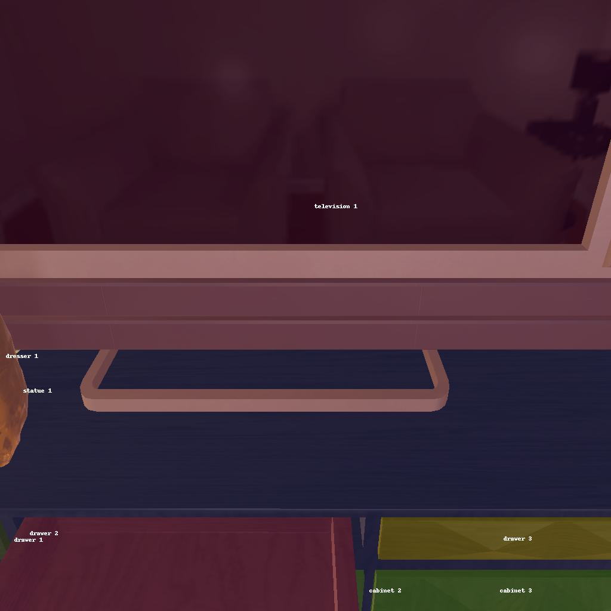

---------------------------------------------------------task: 7---------------------------------------------------------
--------------------------------------------------------------------------------------------------------------------------------------------------------------------
--------------------------------------------------------------------------------------------------------------------------------------------------------------------
Step:--------------------------------------------------------------------------4-------------------------------------------------------------------------------
----------------------------------------
VLM Prompt:
Image1:
**Instruction**
1. Analyze the provided image to identify all visible household objects, focusing on those relevant to the task description "put a creditcard in coffeetable."
2. Use the analysis of the image and the task hint "The agent must find an object of the desired type, pick it up, find the correct location to place it, and put it down there." to answer the question: what is the most reasonable action in the choices for the task description "put a creditcard in coffeetable"?
4. Decide and write the answer using the template: The answer is: (i): , where i is the real number. If there is no desired object in the image, search every place based on **Initial Observation** to find the object. And if no one is exactly correct, choose a similar answer.
**Initial Observation**
You are in the middle of a room. Looking quickly around you, you can see armchair (1-2), dresser (1), garbagecan (1), cabinet (1-4), drawer (1-4), coffeetable (1), sidetable (1), sofa (1)
**Answer Choices**
(1): go to armchair 1
(2): go to armchair 2
(3): go to dresser 1
(4): go to garbagecan 1
(5): go to cabinet 1
(6): go to drawer 1
(7): go to cabinet 2
(8): go to drawer 3
(9): go to cabinet 3
(10): go to drawer 4
(11): go to cabinet 4
(12): go to sidetable 1
(13): go to sofa 1
(14): close drawer 2
(15): take television 1 from drawer 2
(16): take statue 1 from drawer 2
(17): examine drawer 2
**Answer**
Let's think step by step by following the instructions.
----------------------------------------
----------------------------------------
Original Response:
Firstly, we need to identify all visible household objects that are relevant to the task. Since the task is to "put a creditcard in coffeetable," we need to find a credit card. The image, however, does not show a credit card or any obvious place where one might be stored, such as a wallet or purse.
Based on the **Initial Observation**, possible locations where a credit card might be found are in a dresser, cabinet, or drawer. The coffeetable is the ultimate destination for the credit card, but it is not where we would find one.
Now, looking at the **Answer Choices**, we should prioritize actions that involve searching places where a credit card is likely to be found. The most reasonable actions would be to go to a dresser, cabinet, or drawer.
Reviewing the available options, we have:
(3): go to dresser 1
(5): go to cabinet 1
(6): go to drawer 1
(7): go to cabinet 2
(8): go to drawer 3
(9): go to cabinet 3
(10): go to drawer 4
(11): go to cabinet 4
Since these are the most likely places to find a credit card, we should choose one of them. There are no hints as to which specific location would be more likely to contain the credit card, so we can select one at random from the list.
The answer is: (3): go to dresser 1.
----------------------------------------
----------------------------------------
>>> Refine Original VLM Response and Get Pure Action: go to dresser 1
----------------------------------------
-----------------------------------------------------------------
Running time: 14.762690544128418 seconds
Total Money: 2.0701300000000002
-----------------------------------------------------------------
-----------------------------------------------------------------
Text Observation:You arrive at loc 2. On the dresser 1, you see a television 1, and a statue 1.
-----------------------------------------------------------------
UNSUCCEED